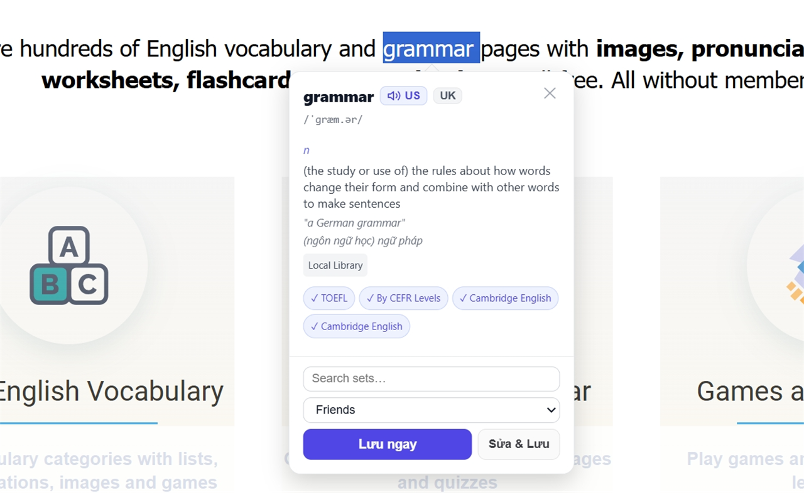
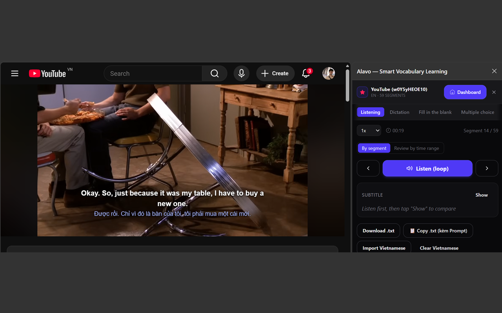
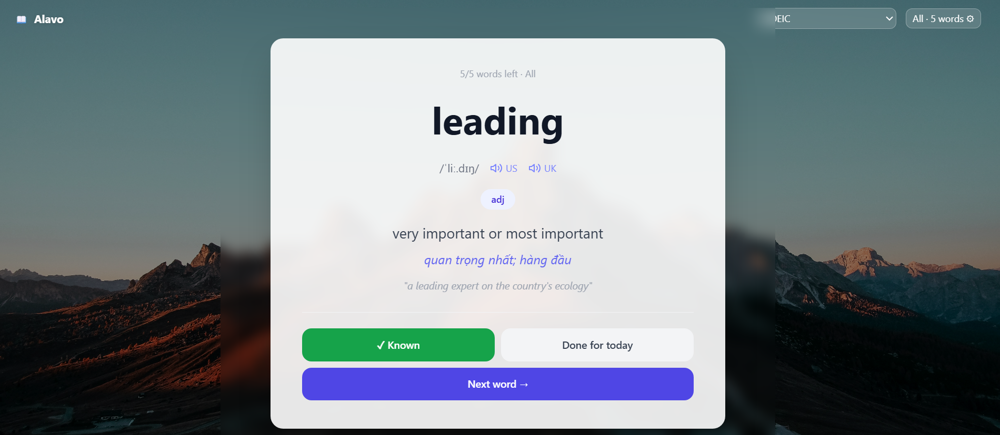
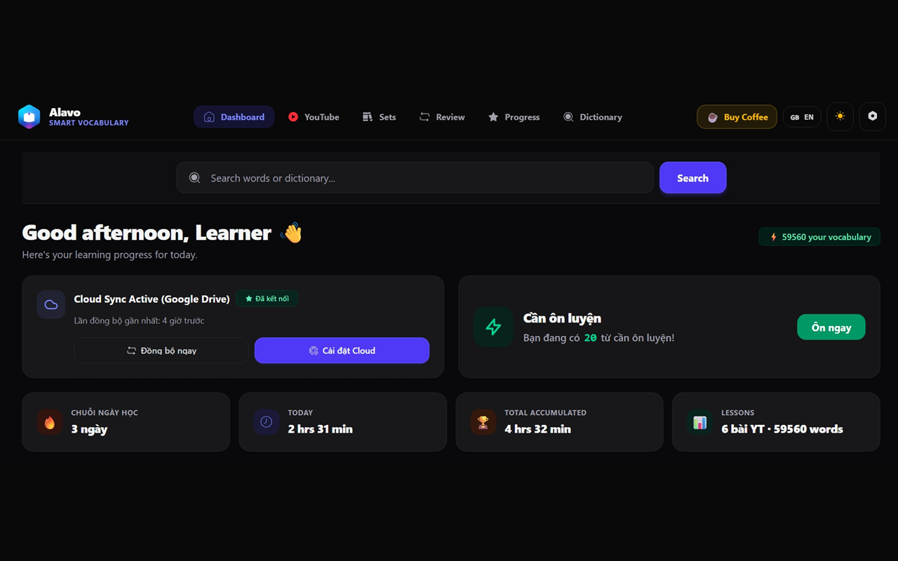
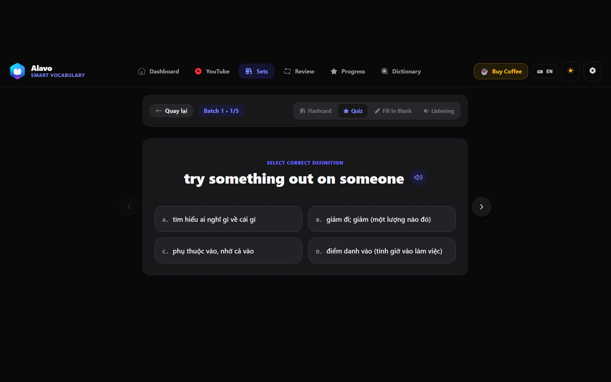

Learn vocabulary from what you already read and watch
Look up any word on any page, save it with the sentence you found it in, and review it right before you forget it.
Chrome and Edge · your words stay on your device

What it does
Ten things, done properly.
Look up any word, anywhere
Select or double-click a word on any page. Pick the trigger that suits you — selection, double-click, or a keyboard shortcut.
Save with its context
One click adds the word to your sets, together with the sentence you met it in. Context is what makes a word stick.
Every new tab is a review
Your new tab shows a word that is due, on a quiet full-screen card. Answer it, mark it known, or come back later — a few seconds per tab adds up.
Learn from YouTube videos
Import a video's subtitles and drill the words that actually appear in it: listening, dictation, fill in the blanks, multiple choice — plus a full transcript you can save words from.
Review before you forget
Flashcards on proven spaced repetition (SM-2). Each word returns exactly when you are about to lose it. Review one set, or mix everything due today.
Four ways to practise a set
Flashcard, quiz, fill in the blank and listening — same words, four angles, so recognising a word turns into actually knowing it.
Find any word again
Instant search across everything you have saved, however large the library gets, plus a dictionary page for looking things up on purpose.
See that it is working
Day streak, time studied, words due, progress per set. Enough to keep you honest, not enough to become a second job.
Your data stays yours
Everything lives on your device and works offline. Export any set to a file whenever you like, or connect your own Google Drive for backup — nothing else.
Bring your own AI
Want richer explanations? Add your own Groq, Gemini or DeepSeek key. It never leaves your device. Optional — Alavo works fine without it.
Turn any YouTube video into a lesson
Import the subtitles once and the panel sits beside the player, working through the video segment by segment. Loop a line until you catch it, slow it down, keep the subtitle hidden until you have committed to an answer — then reveal it and compare.

Listen on loop
Repeat one segment as many times as you need, at the speed you need, before the subtitle is revealed.
Dictation & blanks
Type what you hear, or fill in the missing words, and get checked against the real line.
Two subtitles at once
Show the original and your own language together on the video, and save any word straight from the transcript.
Every new tab is a review
The one page you open dozens of times a day, put to work. Pick the set you are studying, answer the word in front of you, and carry on with whatever you opened the tab for.

A place for everything you collect
Sets, progress, and today's review queue in one dashboard.


Get started
Install, then read something. That's the whole setup.
On Android, your words also sit on the home screen as a widget — one word, tappable to hear it, no app to open.